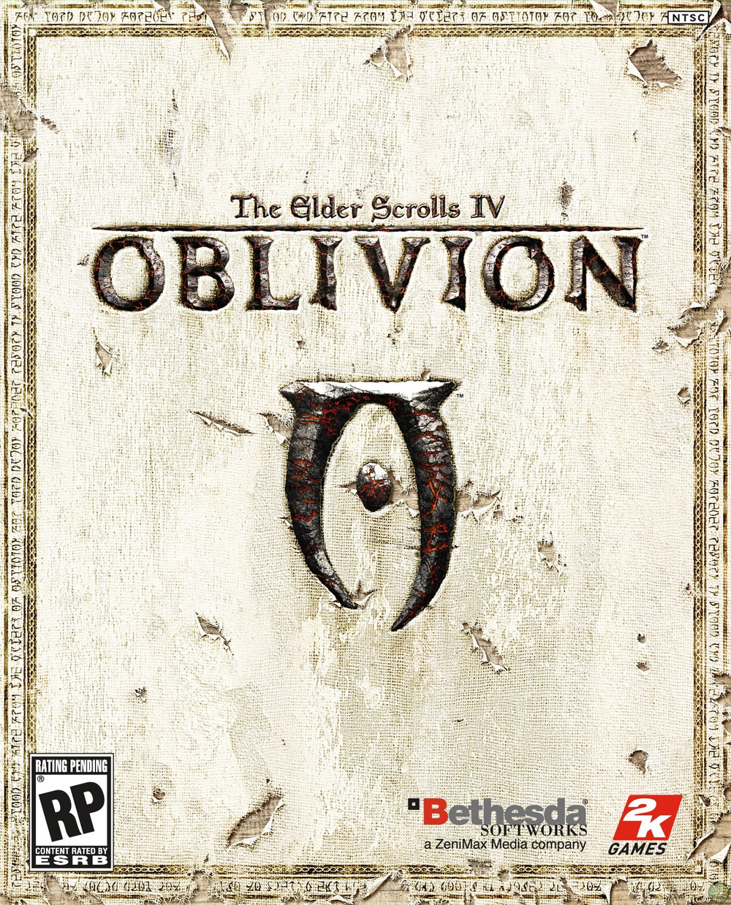
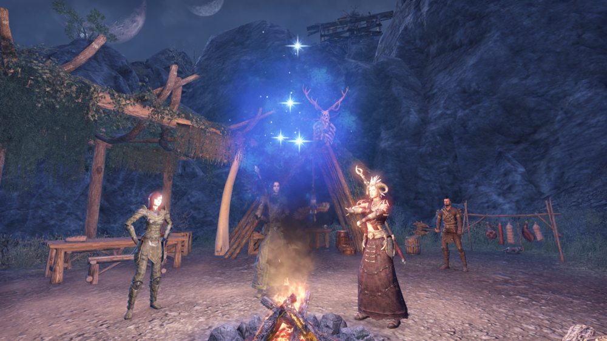
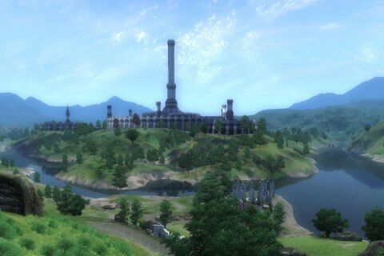
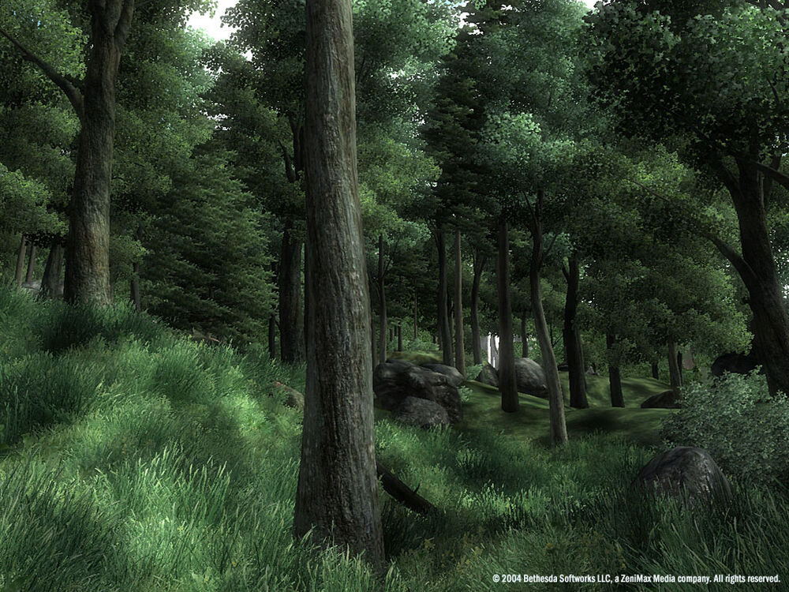
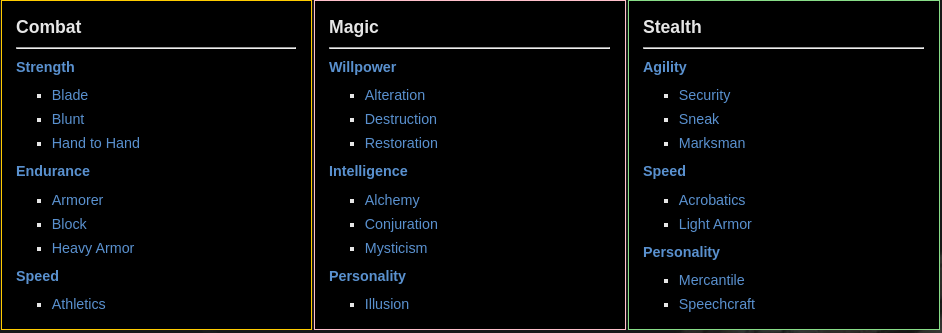

Chapter IV: Oblivion
Short summary
Oblivion is the fourth installment of The Elder Scrolls series and is set in the province of Cyrodiil, the heart of the Septim Empire, during the Oblivion Crisis.
 The plot
I was born 87 years ago. For 65 years I've ruled as Tamriel's emperor. But for all these years, I've never been the ruler of my own dreams. I have seen the gates of Oblivion, beyond which no waking eye may see. Behold, in darkness, a doom sweeps the land. This is the 27th of Last Seed, the year of Akatosh, 433. These are the closing days of the third era, and the final hours of my life.
The plot begins six years after the events of The Elder Scrolls III: Morrowind in 3E 433. Emperor Uriel Septim VII is assassinated as he attempts to flee from the Imperial City after learning that assassins have killed his sons. However, before his death, he hands the Amulet of Kings over to the person who would become the Hero of Kvatch, a lowly prisoner which Uriel had seen in his dreams, with instructions to "close shut the jaws of Oblivion."
The adventure begins after a prison escape and with a quest to find a man named Jauffre - and eventually the illegitimate son of Uriel, the last surviving heir to the Septim throne, hidden away for protection since his birth. Ultimately, the Hero must stop the invasion from Oblivion and stand between the future of Tamriel and the Daedric Prince of Destruction himself.
The world of Oblivion
Oblivion is set in Cyrodiil on the continent of Tamriel. Cyrodiil, due to its proximity to all of the other provinces of Tamriel, is a varying land with the geography being swampy marsh-lands, snowy mountains, and mountainous forests and green fields. The province has nine counties and nine regions: Anvil in the Gold Coast, Bravil in the Nibenay Valley, Bruma in the Jerall Mountains, Cheydinhal in the Valus Mountains, Chorrol in the Colovian Highlands, the Imperial City in the Heartlands, Kvatch in the Gold Coast, Leyawiin in Blackwood, and Skingrad in the West Weald, each with a capital of the same name as the county.
Skills
The player also picks a birthsign and a class, with 7 major skills, and 14 minor skills, totaling to 21 skills, which fall under Combat, Magic, or Stealth. In order to level up, the player must increase major skills a total of 10 times, in any order. The player can level up his or her minor skills through repeated use.
